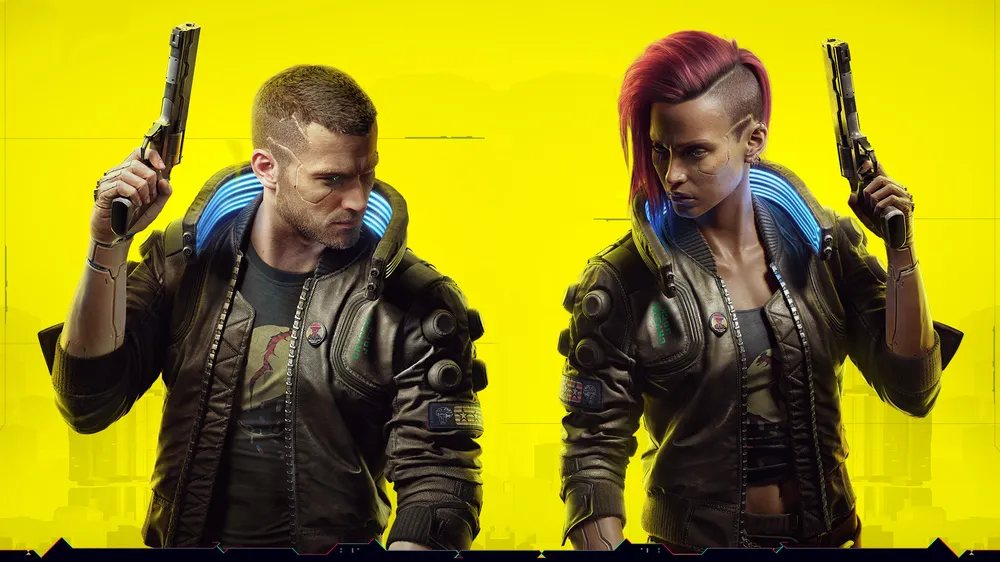
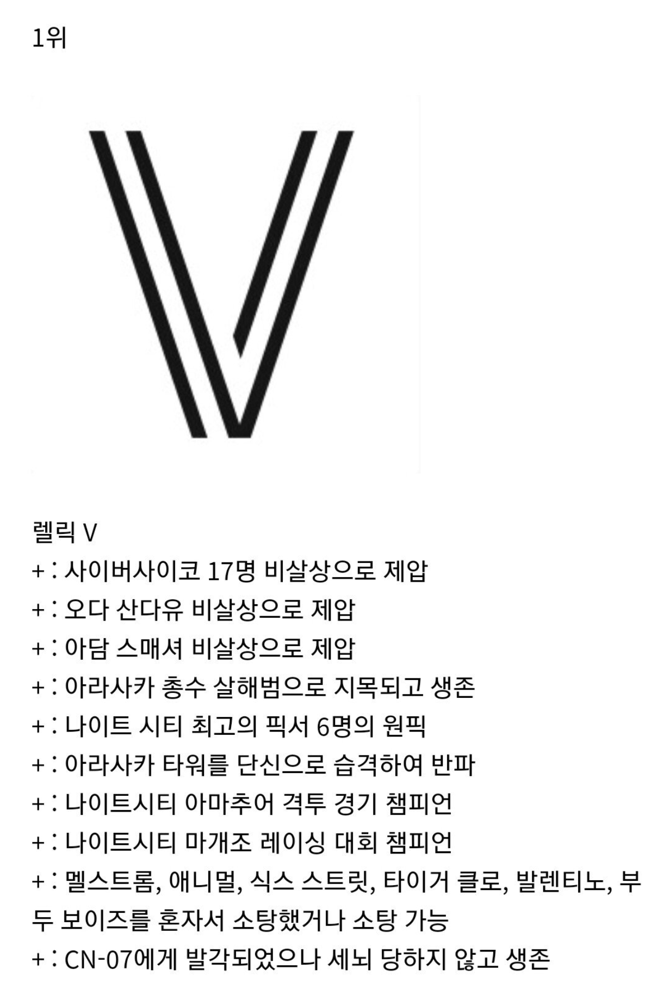

V <- 이새끼 얼마나 강한거임
작중에서 등장인물들이 갱단 두세명만 나와도 쩔쩔매는데
V 이새낀 혼자서 아라사카 타워를 털어먹음


V <- 이새끼 얼마나 강한거임
작중에서 등장인물들이 갱단 두세명만 나와도 쩔쩔매는데
V 이새낀 혼자서 아라사카 타워를 털어먹음
타고난것도 있고 조니가 부하를 다 받아서 남들이면 사이버사이코 되도 이상하지 않은만큼 장착 가능한거임
렐릭이 사이버사이코시스 부하 다받아주고 있는거임
사펑 TRPG에서 특성은 총 6개인데
사펑에서 특성창 켜보면 특성이 다섯개만 있고 빈칸 한칸에 렐릭이 박혀있음
원래 이자리에 있어야 할 특성이 EMP(공감)이고 이게 사이버사이코시스랑 연관이 있는데 이자리를 렐릭이 처먹고 부하 다받아주고 있는거 ㅋㅋㅋㅋ
아담 스매셔가 아무리 특출난 사이코라고 해도, 어쨋든 사이버웨어의 정신적 부하를 견디며 사용하는건데 V는 치사하게 아무 디버프 없이 내몸처럼 막 쓰고 있잖아. V랑 비교하는건 데이비드나 아담스매셔에게 너무 억울한 일같아
자세히 묘사되진 않았으나 V가 어릴때부터 정서적으로 잘 자람
+ 좋은 동료들이 계속 있어줌
+ 이미 사싸에 가까운 조니가 부담 반띵해줌
승리의 빅토리!!
아담스매셔를 좆집으로 만들어버리는 순수무력
나이트 시티 역사상 최강최흉의 사이버 사이코
진짜 인외의 경지인듯
사람새끼가 할 수 없는 업적을 다 했어
심지어 V 저 새끼 "민수용" 장비로만 아담스매셔 이긴거임ㅋㅋㅋㅋㅋ
dlc 깨면 군용보다 좋은걸 주긴 하지ㅋㅋ
엣지러너2에서 나이트시티 특히 아라사카가 존나 맛탱이 가있는 이유
자연재해 한마리가 깽판 시원하게 조지고 사라짐
살아 움직이는 천재지변
조니랑 같이있어서 온몸개조해도 사이버사이코 안되는거임? 나 겜안하고 유튜브로만 봣는데 자세히 몰라
V가 타고난 놈이라 이상 없는줄 알았는데